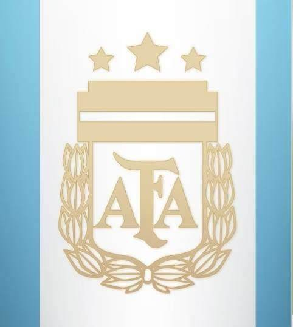
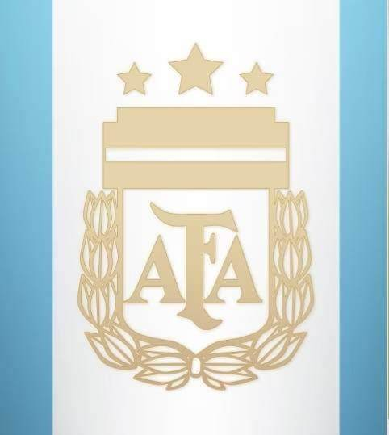

leo messi
definition
Lionel Andrés Messi Cuccittini is an Argentine footballer who plays as a striker for Paris Saint-Germain in Ligue 1 and captains the Argentine national team. Birthdate and place of birth: June 24, 1987 (age 35 years old), Rosario, Argentina Wife: Antonella Roccuzzo (Married 2017) Children: Thiago Messi, Matteo Messi, Ciro Messi Roccuzzo Joining dates: 2021 (Paris Saint-Germain), March 2019 (Argentina national football team), Parents: Jorge Horatio Messi, Celia Maria Cuccittini
all the legend does
this player is a legend he has many individual and team titles .